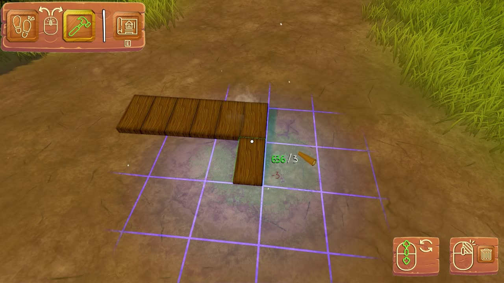

Kläppen.
Un jeu de construction cozy et bienveillant, avec des éléments de bac à sable. Le joueur incarne un esprit de la forêt qui construit des cabanes pour abriter les animaux, en respectant les besoins propres à chacun.
- Année
- 2025
- Durée
- ~8 mois
- Équipe
- 3 personnes
- Moteur
- Unreal Engine 5
- Contexte
- Brassart · fin d’études
Mon rôle
J’ai implémenté les systèmes et mécaniques de gameplay principaux, à commencer par le système de construction, en traduisant les intentions de design en solutions techniques robustes et évolutives.
J’ai aussi participé aux décisions de Game Design : prototypage de fonctionnalités, itérations sur les mécaniques, et cohérence de chaque interaction avec la vision et le ton du projet.
J’ai conçu et réalisé les interfaces en visant la clarté, l’accessibilité et le confort du joueur : structure de la logique UI, intégration aux systèmes de gameplay comme le menu d’inventaire, et affinage par les playtests.
Tout au long du projet, j’ai travaillé étroitement avec les Designers et les Artistes, en équilibrant contraintes techniques, objectifs de design et expérience joueur.
L’équipe
- Esteban LafargueGameplay & UI Programmer · Technical / Game Designer · UX
- Roni PoggioliLevel Designer · VFX Artist · Tech Artist
- Samuel GuibertSound Designer · Producer · Compositeur
Les systèmes que j’ai créés
Chaque système a sa propre analyse : raisonnement, graphes Blueprint, compromis et ce que je ferais autrement. Choisissez-en un pour plonger dedans.

Système de construction
Du choix d’une pièce dans l’inventaire jusqu’à sa destruction avec remboursement : snapping, grille mathématique de secours, pipeline de placement en deux étapes, et une conversion HISM qui garde les grands villages légers.
- 19 pièces, modifiables par les Designers dans une Data Table
- Points de snapping + grille mathématique virtuelle
- Acteurs → HISM au-delà de 2 000 unités
- 20+ graphes Blueprint, profilés avec Unreal Insights
Leçons apprises
Étude de cas suivante